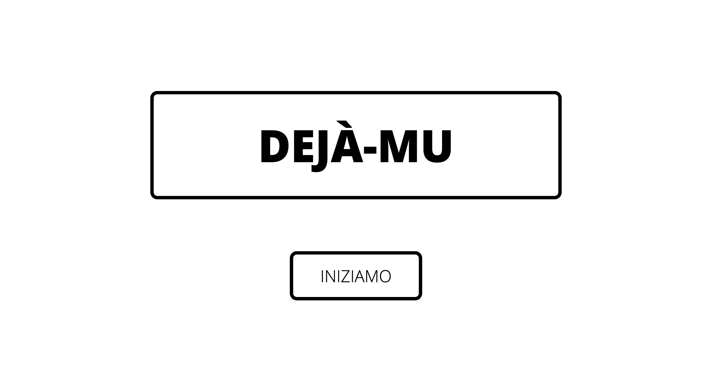
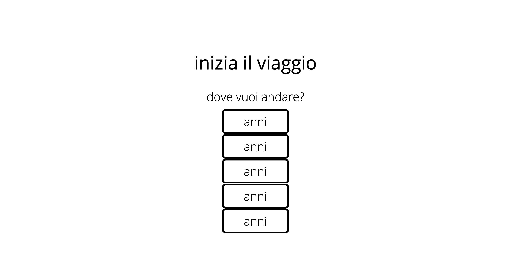
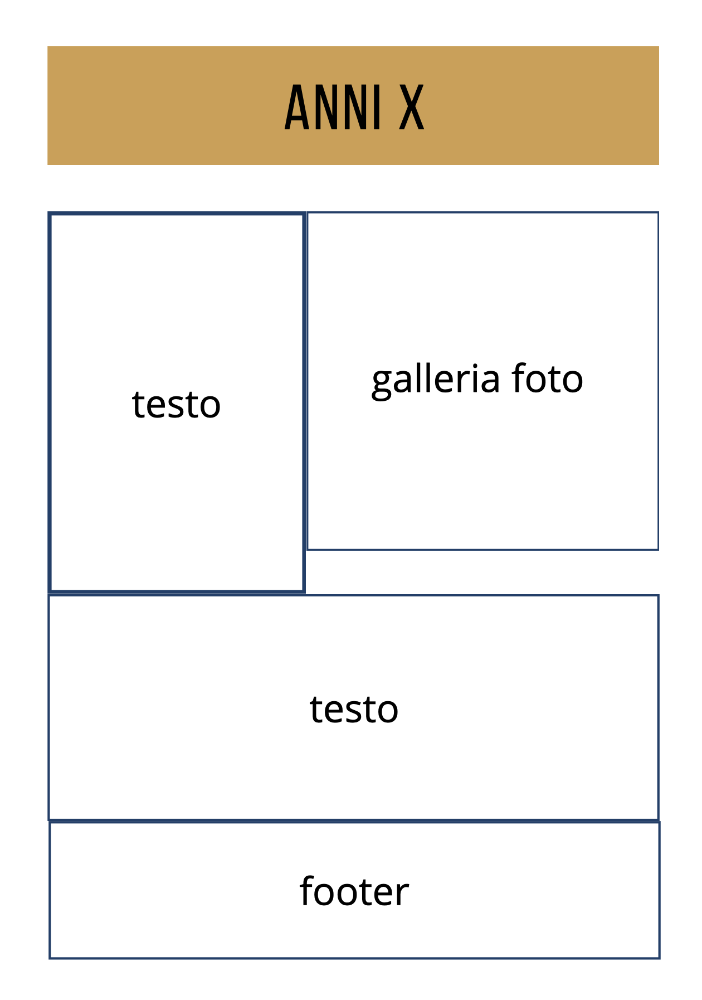

Documentazione
Abstract
Dejà-Mu è per chiunque voglia fare un viaggio nel passato, rileggendo nomi di artisti che hanno fatto la storia della musica dagli anni '60 ai primi nni 2000. È interessante vedere come una sola canzone possa trasmettere sensazioni diverse e, spesso, ciò è dovuto al fatto che la nostra memoria entra in azione per ricordarci un evento, o un momento della nostra vita legato al suono.
Project Management Plan
Benchmarking
1. Obiettivi
Il sito mira a costruire una community in cui le persone possano condividere i ricordi più significativi, associandoli ad alcune canzoni, e in cui ci si senta coinvolti (le canzoni suggerite dagli utenti vengono aggiunte alle playlist pubbliche). Inoltre, il sito ha uno scopo informativo, poiché presenta alcuni numeri e statistiche per quanto riguarda (ad esempio) le vendite di alcuni artisti.
2. Target utente
Il target primario è una persona tra i 35 e i 70 anni, visto che si parla di musica dagli anni '60 ai primi anni 2000. Possono sicuramente esserci anche utenti casuali che si imbattono nella pagina Facebook, o persone più giovani interessate non solo alla musica più recente.
3. Competitors
Non sono stata in gardo di trovare specifici competitors che offrissero il servizio informazione-community-playlist. Comunque si potrebbe prendere in considerazione qualsiasi rivista (o simili) musicale online con scopo informativo: ad esempio Rolling Stone (Italia) e Nonsolocultura.studenti.it. Si tratta di siti con grafiche più accattivanti in grado di catturare maggiormente l'attenzione dell'utente, ma in cui è più difficile trovare la suddivisione delle decadi, o una playlist associata per ognuna di esse.
Struttura e Layout
1. Architettura del sito
2. Wireframe
homepage
inizio
anni x
3. Look and feel
Ho utilizzato colori che riprendessero la homepage, abbastanza delicati da non distogliere l'attenzione dell'utente dal contenuto del sito. Per quanto riguarda i font, ho utilizzato:"Joan" (serif), "Charmonman" (cursive), "Georgia" (serif), nella homepage e nella pagina "inizio", "Abril Fatface" (cursive), "Bebas Neue" (cursive), "Noto Sans Korean" (sans-serif), in tute le altre pagine.
Linguaggi e strumenti
Per realizzare il sito sono stati utilizzati linguaggi HTML, CSS e JavaScript
Sono stati utilizzati:
- Bootstrap: per le icone
- Sliderrevolution: per la grafica dello sfondo della homepage e della pagina "inizio"
- HTML Color Codes per i colori
- Google fonts
- Github per la pubblicazione
- Sublime Text come editor per HTML, CSS e JavaScript
Communication Strategy
Background
Dejà-Mu vuole rappresentare uno "scrigno" online, dove tenere e confrontarsi sui ricordi più belli, entrando a fare parte della community. Il breve "recap" per ogni decade vuole aiutare l'utente a ricordare dov'era e cosa stava facendo quando ascoltava quegli artisti, per poi commentare il tutto sul gruppo associato alla pagina Facebook. Il fatto che ci sia un gruppo online dove ognuno può commentare fa sicuramente sentire "parte di un qualcosa", quindi risulta efficace. Si tratta di un progetto che ha bisogno di qualche mese per crescere, quindi non può dimostrare tutto il suo potenziale solo in qualche giorno.
obiettivi comunicativi
Per potenziare la comunicazione del sito ho cercato di mantenere semplice il linguaggio, anche colloquiale, poiché permette di catturare maggiormente l'attenzione dell'utente. Di solito le persone sono diffidenti quando c'è da "iscriversi" a qualcosa, quindi mi aspetto che il rapporto visualizzazioni del sito/ iscrizioni al gruppo Facebook sia 120/20.
Target audience e messaggio
Essendo il target utente una persona tra i 35 e i 60 anni ho deciso di promuovere il sito sulla piattaforma Facebook. Il format della community lascia più spazio al commento personale rispetto a un post di Instagram, perché non serve un post dell'amministratore affinché gli utenti possano comunicare liberamente tra loro. Il messaggio è proprio questo: vedere come interagiscono le persone quando si lascia spazio all'emotività dei ricordi.
Promozione
Ho promosso il sito attraverso Facebook e Whatsapp.
Valutazione dei risultati
Sto tenendo monitorato il sito attraverso Google Analytics.